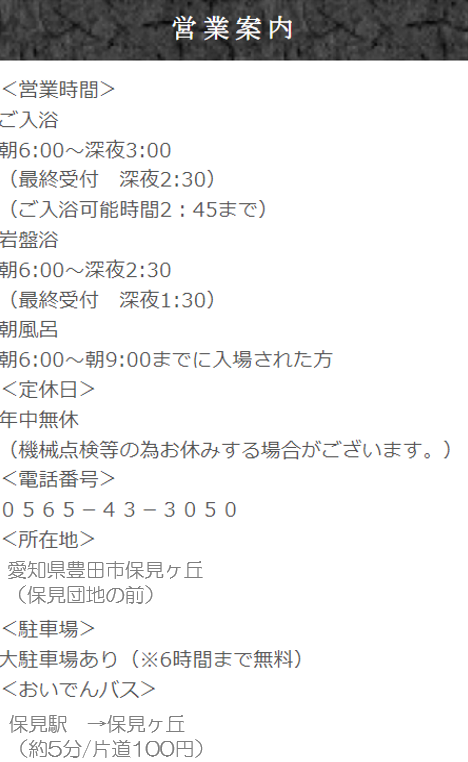
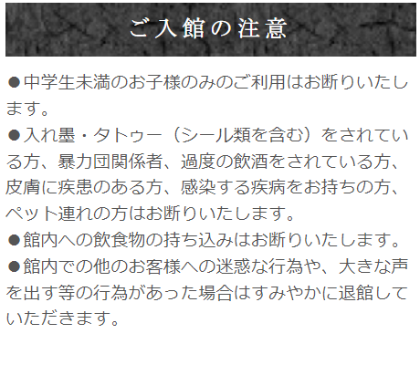

コンセプト
のまきの湯とは？---------------
『心とカラダの健康増進施設』 として、地下1,800メートルから湧き出る良質な
天然温泉をはじめ、天然温泉に高濃度の炭酸ガスを溶け込ませた高濃度炭酸泉な
ど 「4種類のお風呂とサウナ」が凝縮されています。
また「からだを温めて健康になろう！！」をテーマに韓国600年の伝統温熱サウナ
のまきの湯で、日頃疲れたおからだを癒し、明日への活力にして頂けれた幸いで
ございます。また、のまきの湯をご利用されるお客様がいつまでも健康でおられ
ることをお祈り申し上げます。

